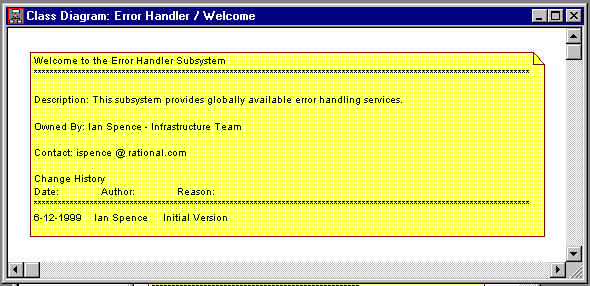

Standards: Welcome
Diagram

Class Diagram |
A class diagram introducing / presenting the purpose of the package. |
| Related Information: |
|
Topics
Background 
The Welcome diagram is an explanatory diagram welcoming users to the package.
This is a nice touch if the package is to be widely used across many projects or by people
unfamiliar with the architecture of the package.
Welcome diagrams are also very effective if the model is to be web published as there
is no visibility of the underlying configuration management system from the web published
model.
The Welcome diagram plays the same role, with respect to the package, as the comment
block that is traditionally placed at the top of a source file.
The standard welcome page should be used for all packages. This includes version and
ownership information.
Standard
The format of the Welcome diagram is to place a note with the following content at the
top of a class diagram.
Welcome to the <<Name of the Package>> Package
*****************************************
Description: << Description of the purpose of the package>>
Owned By: <<Name of the Individual or Team that owns the package>>
Contact: <<e-mail / phone number for enquiries etc...>>
Changes:
Date:
Author:
Reason:
***************************************************************
<<History of changes goes here>>
Examples

|